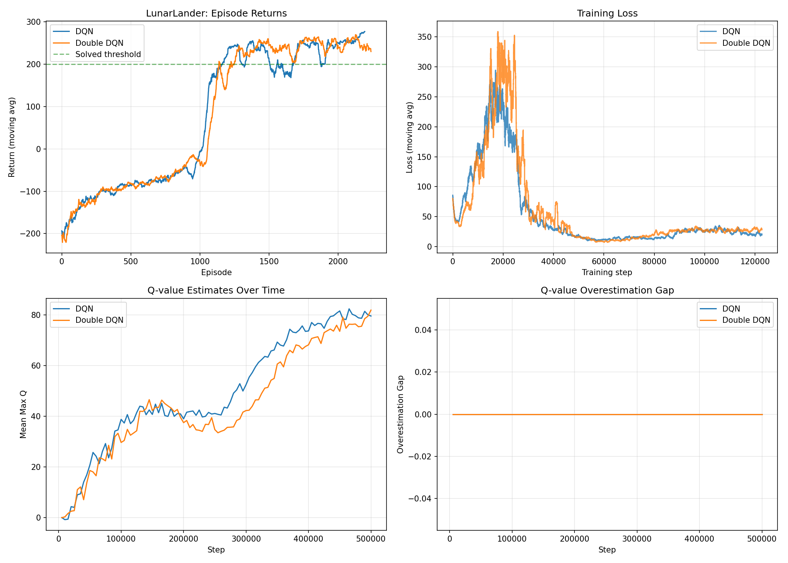
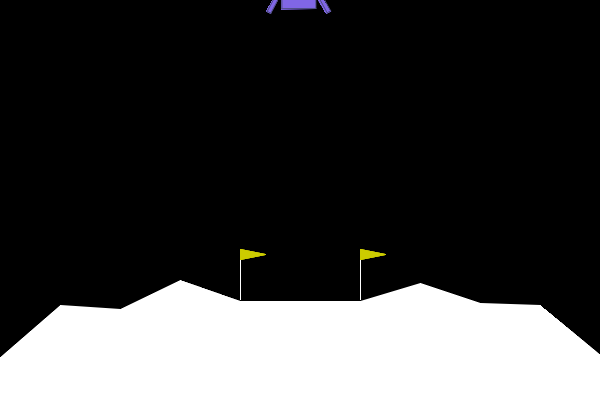

🚀 DQN vs Double DQN - LunarLander Results
📊 Current Status
Page last loaded:
ℹ️ About This Analysis
This page shows results from DQN and Double DQN training on the LunarLander-v3 environment.
Key Difference: Double DQN reduces Q-value overestimation by decoupling action selection from action evaluation.
- DQN: Uses max Q-value directly (biased)
- Double DQN: Selects action with online network, evaluates with target network (less biased)
📈 Existing Training Results
Original Training Plot
lunarlander_training.png - From the executed notebook 13_DQN_LunarLander.ipynb

❌ Plot not found. Check if lunarlander_training.png exists.'">
🎬 Existing Agent Animations (GIFs)
DQN Agent Performance
dqn_lunarlander.gif - Trained DQN agent landing

⏳ GIF not found or still generating.'">
Double DQN Agent Performance
ddqn_lunarlander.gif - Trained Double DQN agent landing
⏳ GIF not found or still generating.'">
🆕 New Comprehensive Analysis
⏳ Training in progress...
The comprehensive comparison plot will appear below when training completes (~30-40 minutes).
Check the terminal output or refresh this page to see updates.
Comprehensive DQN vs Double DQN Comparison
plots/dqn_vs_double_dqn_comprehensive.png
This plot shows:
- Episode Returns: Performance over training
- Overestimation Gap: KEY METRIC showing DQN bias vs Double DQN correction
- Q-Values: Magnitude of Q-value estimates
- Training Loss: Learning stability
- Episode Lengths: Efficiency improvements
- Performance Comparison: Final results and distributions

🎥 Trained Agent Videos
Videos show the trained agents performing lunar landings. Watch for differences in behavior between DQN and Double DQN!
DQN (No Wind)
Double DQN (No Wind)
DQN (With Wind)
Double DQN (With Wind)
📁 Available Files
Plots:
- ✓
lunarlander_training.png - Original training results (240KB)
- ⏳
plots/dqn_vs_double_dqn_comprehensive.png - Comprehensive comparison (generating...)
Animations (GIFs):
- ✓
dqn_lunarlander.gif - DQN agent performance (628KB)
- ✓
ddqn_lunarlander.gif - Double DQN agent performance (424KB)
Videos (MP4 - New Analysis):
- ⏳
videos/dqn_nowind.mp4 - (generating...)
- ⏳
videos/doubledqn_nowind.mp4 - (generating...)
- ⏳
videos/dqn_wind.mp4 - (generating...)
- ⏳
videos/doubledqn_wind.mp4 - (generating...)
Models:
- ⏳
DQN_NoWind_model.pt - (generating...)
- ⏳
DoubleDQN_NoWind_model.pt - (generating...)
- ⏳
DQN_Wind_model.pt - (generating...)
- ⏳
DoubleDQN_Wind_model.pt - (generating...)
Data:
- ⏳
quick_results.log - Training progress log
🔍 Understanding the Results
What to Look For:
- Overestimation Gap Plot:
- DQN should show POSITIVE gap (0.5-2.0)
- Double DQN should show gap NEAR ZERO
- This is the KEY difference proving Double DQN works better
- Episode Returns:
- Both should eventually reach 200+ (environment solved)
- Double DQN often learns more stably
- Performance Under Wind:
- Wind makes the task harder
- Compare how each algorithm handles disturbances
⚙️ Training Commands
Currently Running:
python quick_comparison.py
Check Progress:
tail -f quick_results.log
Check Status:
./check_status.sh
Alternative - Interactive Notebook:
jupyter notebook DQN_vs_DoubleDQN_Comprehensive_Analysis.ipynb
💡 Tips
- Refresh this page periodically to see new results as they're generated
- Training takes ~30-40 minutes for the quick version (50k steps per agent)
- Check
quick_results.log to see current training progress
- All plots and videos will appear automatically when ready